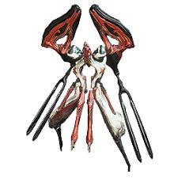

No jogo existem diversas facções que se pode deparar enquanto joga as diversas missões.
De seguida iremos apresentar cada uma e explicar o melhor método para combater cada uma delas:
| Grineer | Corpus | Infested | Murmur | Sentient | Dax |
|---|---|---|---|---|---|
|
|
 | |